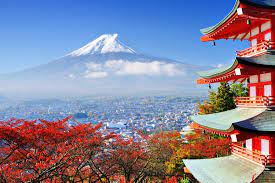
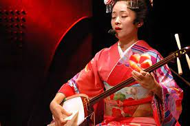
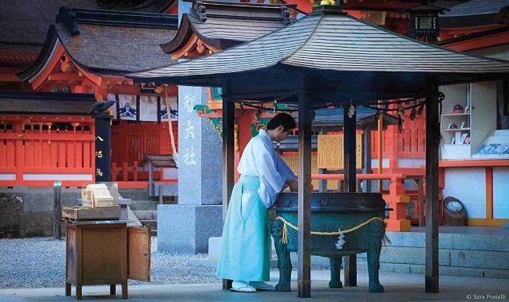
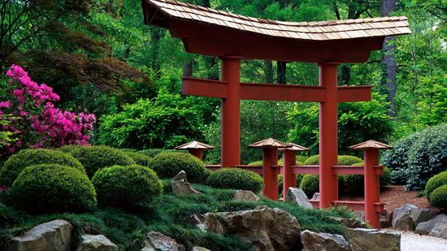
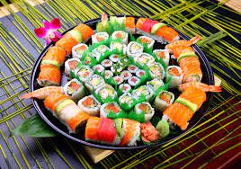
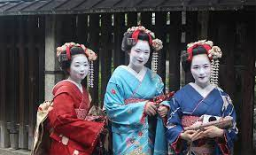

Welcome, Explore the most beautiful place in the world. From you Home!!
Japan, a captivating country nestled in the eastern part of Asia, is a land where ancient traditions seamlessly blend with cutting-edge modernity. From the bustling streets of Tokyo to the serene temples of Kyoto, Japan offers a fascinating tapestry of culture, traditions, and awe-inspiring sites that beckon travelers from around the globe. Embark on a journey with us as we delve into the captivating world of Japan's rich heritage, time-honored customs, and iconic landmarks.
Japan is blessed with a myriad of captivating sites that showcase its rich history and natural wonders. The historic city of Kyoto, with its UNESCO World Heritage-listed temples and enchanting geisha districts, offers a glimpse into Japan's past.
Japanese culture is an elegant mosaic that values harmony, respect, and nature. It encompasses tea ceremonies, traditional theater (Noh and Kabuki), and the graceful art of flower arrangement (ikebana), showcasing the Japanese people's dedication to preserving their cultural heritage.
Experience the enchantment of coin throwing into wells, a cherished Japanese tradition. Toss a coin with a wish, connecting to ancient beliefs and the essence of Japanese culture. Feel gratitude as your intentions flow into the depths, embracing the transformative power of giving. Discover the beauty and profound connection this practice offers.
For nature enthusiasts, the majestic Mount Fuji stands as a symbol of Japan's natural beauty. Ascending to its summit is a cherished endeavor for many adventurers, offering breathtaking vistas of the surrounding landscapes. The tranquil beauty of the Arashiyama Bamboo Grove in Kyoto and the serene island of Miyajima, with its iconic floating torii gate, are also must-visit destinations.
Beyond the delectable taste, sushi offers a glimpse into the essence of Japanese culture. It embodies the deep respect for nature, with the freshest seasonal ingredients sourced from the bounty of the sea. The dedication and craftsmanship that go into every sushi creation reflect the values of precision, discipline, and attention to detail that are deeply ingrained in Japanese traditions.
Engage in the vibrant festivities of Japanese matsuri (festivals) that celebrate the changing seasons, local traditions, and cultural heritage. From the electrifying drum beats of Taiko performances to the colorful parades and dazzling fireworks, matsuri offer a glimpse into the lively spirit and communal bonds that define Japanese society.
